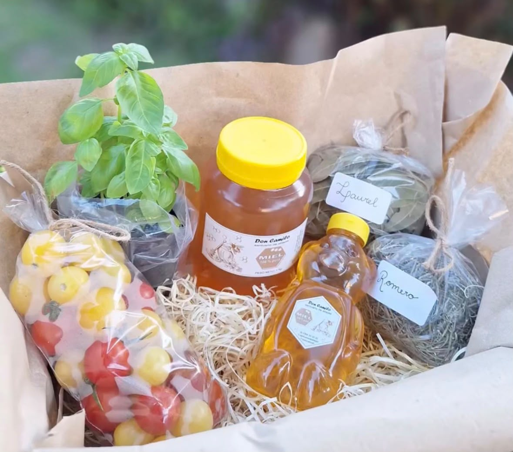

Un producto elaborado por las abejas
Nuestra miel es un alimento natural que puede utilizarse para acompañar desayunos, infusiones, postres y distintas preparaciones caseras.
En Todo Natural ofrecemos miel y hortalizas frescas. La disponibilidad de algunos productos puede variar según la estación y cada cosecha.

Nuestra miel es un alimento natural que puede utilizarse para acompañar desayunos, infusiones, postres y distintas preparaciones caseras.
Las presentaciones, tamaños y cantidades disponibles pueden consultarse directamente a través de nuestros medios de contacto.
Ofrecemos diferentes hortalizas según la época del año, respetando los momentos adecuados de siembra, crecimiento y cosecha.
La variedad y cantidad de hortalizas puede cambiar, por eso recomendamos consultar los productos disponibles antes de realizar un pedido.